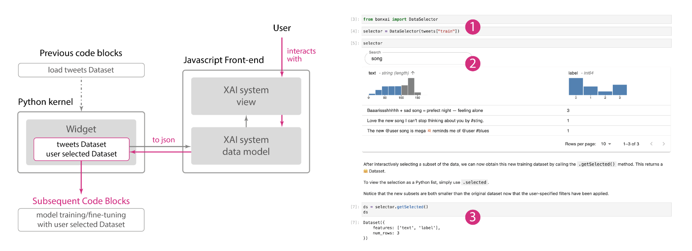

Publications
Towards Domain-centered Counterfactual Explanations of Cardiovascular Image Classification Models
Grace Guo, Lifu Deng, Animesh Tandon, Alex Endert, Bum Chul Kwon
ACM FAccT, 2024 (Upcoming)
Visualizing Intelligent Tutor Interactions for Responsive Pedagogy
Grace Guo*, Aishwarya Mudgal Sunil Kumar*, Adit Gupta, Adam Coscia, Chris MacLellan, Alex Endert
ACM AVI, 2024 (Upcoming)
Grace Guo, John Stasko, Alex Endert
ACM AVI, 2024 (Upcoming)
Grace Guo, Dustin Arendt, Alex Endert
ACM CHI Workshop on Human-Notebook Interactions, 2024 (Upcoming)
Situating Datasets: Making Public Eviction Data Actionable for Housing Justice
Anh-Ton Tran, Grace Guo, Jordan Taylor, Katsuki Andrew Chan, Elora Lee Raymond, Carl DiSalvo
ACM CHI, 2024 (Upcoming)
Causalvis: Visualizations for Causal Inference
Grace Guo, Ehud Karavani, Alex Endert, Bum Chul Kwon
ACM CHI, 2023
video | paper | code
VAINE: Visualization and AI for Natural Experiments
Grace Guo, Maria Glenski, ZhuanYi Shaw, Emily Saldanha, Alex Endert, Svitlana Volkova, Dustin Arendt
IEEE Information Visualization Short Papers, 2021
video | paper | demo
A Survey of Human-Centered Evaluations in Human-Centered Machine Learning
Fabian Sperrle, Mennatallah El-Assady, Grace Guo, Rita Borgo, Duen Horng Chau, Alex Endert, Daniel Keim
Computer Graphics Forum, 2021
video | paper | survey homepage | survey browser
Florence: a Web-based Grammar of Graphics for Making Maps and Learning Cartography
Ate Poorthuis, Lucas van der Zee, Grace Guo, Jo Hsi Keong, Bianchi Dy
Cartographic Perspectives, Issue 96, 2020